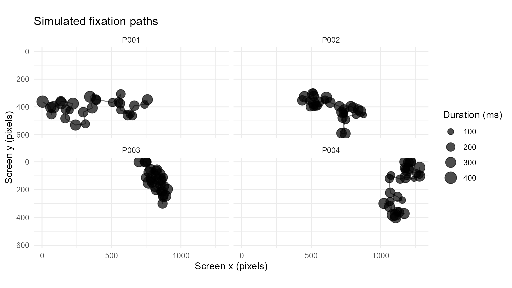
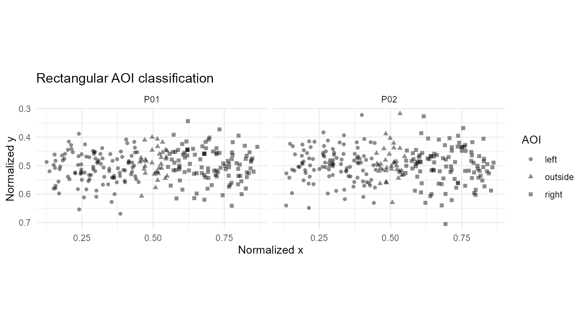
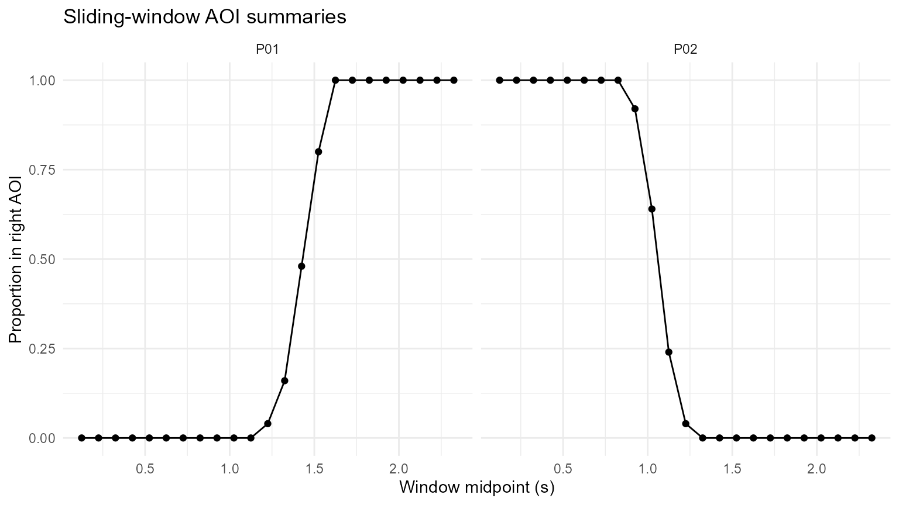

AOI Labelling, Sliding Windows, and Fixation Simulation
Source:vignettes/articles/aoi-window-feature-engineering.Rmd
aoi-window-feature-engineering.RmdPurpose
This article combines three reusable feature-engineering helpers:
- simulate Gazepoint-like fixation events;
- add rectangular AOI membership to sample-level coordinates;
- summarise gaze and pupil measures in sliding time windows.
Simulate fixation events
fixations <- simulate_gazepoint_fixations(
n_subjects = 4,
n_fix = 30,
coordinate_system = "pixels",
screen_width = 1280,
screen_height = 720,
sd = 45,
seed = 2026
)
fixations
#> # A tibble: 120 × 17
#> USER_ID MEDIA_ID FPOGID FPOGS FPOGD FPOGX FPOGY FPOGV subject fixation_id
#> <chr> <chr> <int> <dbl> <dbl> <dbl> <dbl> <int> <chr> <int>
#> 1 P001 simulated_… 1 0 0.292 0.593 0.483 1 P001 1
#> 2 P001 simulated_… 2 0.327 0.164 0.577 0.532 1 P001 2
#> 3 P001 simulated_… 3 0.503 0.261 0.520 0.543 1 P001 3
#> 4 P001 simulated_… 4 0.816 0.243 0.482 0.640 1 P001 4
#> 5 P001 simulated_… 5 1.16 0.197 0.509 0.644 1 P001 5
#> 6 P001 simulated_… 6 1.36 0.0487 0.470 0.606 1 P001 6
#> 7 P001 simulated_… 7 1.46 0.191 0.496 0.627 1 P001 7
#> 8 P001 simulated_… 8 1.66 0.168 0.442 0.587 1 P001 8
#> 9 P001 simulated_… 9 1.83 0.259 0.438 0.520 1 P001 9
#> 10 P001 simulated_… 10 2.11 0.212 0.430 0.506 1 P001 10
#> # ℹ 110 more rows
#> # ℹ 7 more variables: start_time <dbl>, end_time <dbl>, duration <dbl>,
#> # duration_ms <dbl>, x <dbl>, y <dbl>, coordinate_system <chr>
ggplot(fixations, aes(x, y, group = USER_ID)) +
geom_path(alpha = 0.5) +
geom_point(aes(size = duration_ms), alpha = 0.7) +
scale_y_reverse() +
facet_wrap(~ USER_ID) +
coord_fixed() +
labs(
x = "Screen x (pixels)",
y = "Screen y (pixels)",
size = "Duration (ms)",
title = "Simulated fixation paths"
) +
theme_minimal()
Create a sample-level trace
set.seed(2026)
n <- 500
samples <- data.frame(
USER_ID = rep(c("P01", "P02"), each = n / 2),
trial = rep(c("T01", "T02"), each = n / 2),
TIME = rep(seq(0, 2.49, by = 0.01), 2),
FPOGX = c(
seq(0.15, 0.85, length.out = n / 2),
seq(0.85, 0.15, length.out = n / 2)
) + rnorm(n, 0, 0.015),
FPOGY = 0.50 + rnorm(n, 0, 0.06),
mean_pupil = 3.3 + rnorm(n, 0, 0.05)
)
aoi_defs <- data.frame(
name = c("left", "right"),
L = c(0.00, 0.55),
R = c(0.45, 1.00),
T = c(0.20, 0.20),
B = c(0.80, 0.80)
)Add AOI membership
labelled <- add_gazepoint_aoi(
samples,
aoi_defs,
output = "both",
overlap = "error"
)
table(labelled$aoi_current, useNA = "ifany")
#>
#> left outside right
#> 217 70 213
ggplot(labelled, aes(FPOGX, FPOGY, shape = aoi_current)) +
geom_point(alpha = 0.45) +
scale_y_reverse() +
facet_wrap(~ USER_ID) +
coord_fixed() +
labs(
x = "Normalized x",
y = "Normalized y",
shape = "AOI",
title = "Rectangular AOI classification"
) +
theme_minimal()
Sliding-window summaries
labelled$right_aoi_numeric <- as.numeric(labelled$aoi_right)
windows <- analyze_gazepoint_window(
labelled,
window_size = 250,
step = 100,
summary_stats = c("mean", "sd", "valid_prop"),
by = c("USER_ID", "trial"),
value_cols = c("mean_pupil", "right_aoi_numeric")
)
windows
#> # A tibble: 46 × 15
#> USER_ID trial window_start window_end window_mid window_size window_step
#> <chr> <chr> <dbl> <dbl> <dbl> <dbl> <dbl>
#> 1 P01 T01 0 0.25 0.125 250 100
#> 2 P01 T01 0.1 0.35 0.225 250 100
#> 3 P01 T01 0.2 0.45 0.325 250 100
#> 4 P01 T01 0.3 0.55 0.425 250 100
#> 5 P01 T01 0.4 0.65 0.525 250 100
#> 6 P01 T01 0.5 0.75 0.625 250 100
#> 7 P01 T01 0.6 0.85 0.725 250 100
#> 8 P01 T01 0.7 0.95 0.825 250 100
#> 9 P01 T01 0.8 1.05 0.925 250 100
#> 10 P01 T01 0.9 1.15 1.02 250 100
#> # ℹ 36 more rows
#> # ℹ 8 more variables: window_unit <chr>, n_samples <int>,
#> # mean_pupil_mean <dbl>, mean_pupil_sd <dbl>, mean_pupil_valid_prop <dbl>,
#> # right_aoi_numeric_mean <dbl>, right_aoi_numeric_sd <dbl>,
#> # right_aoi_numeric_valid_prop <dbl>
ggplot(
windows,
aes(window_mid, right_aoi_numeric_mean, group = USER_ID)
) +
geom_line() +
geom_point() +
facet_wrap(~ USER_ID) +
labs(
x = "Window midpoint (s)",
y = "Proportion in right AOI",
title = "Sliding-window AOI summaries"
) +
theme_minimal()